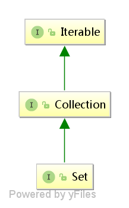
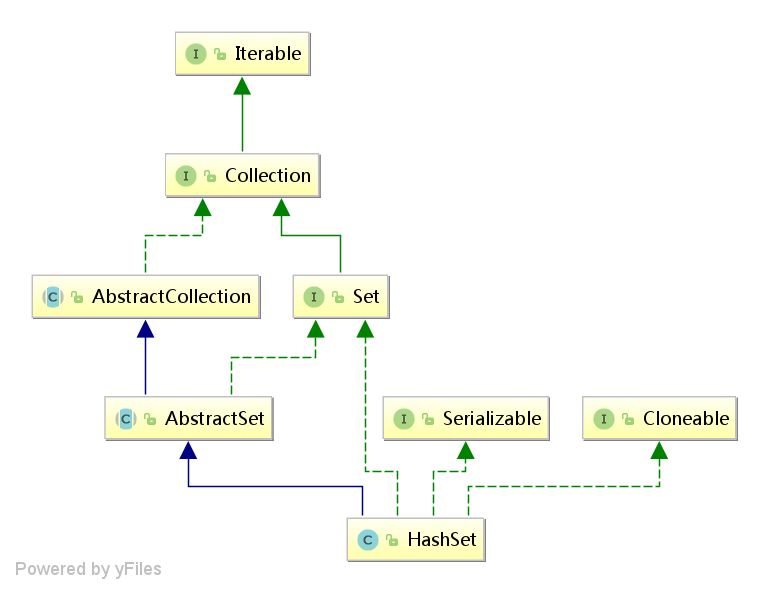
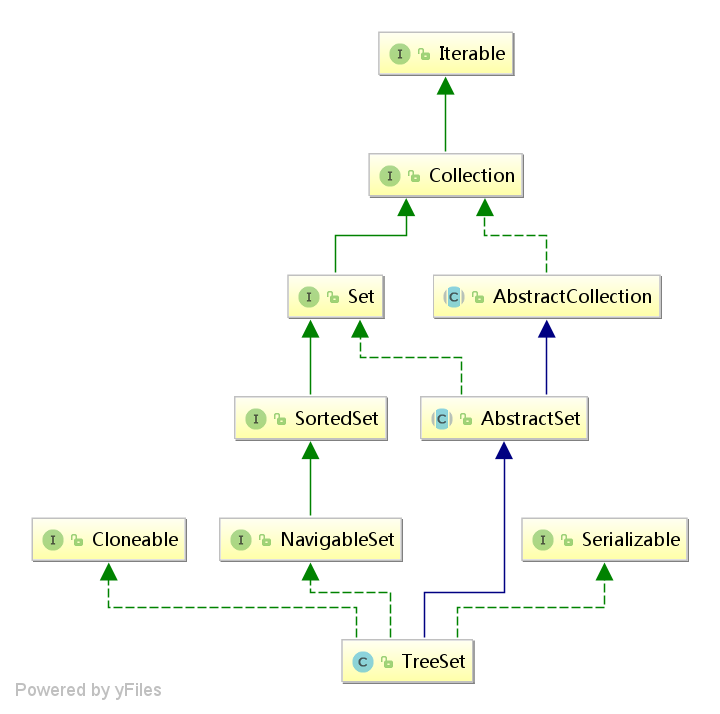

Set集合
在Collection接口下又有另外一个比较常用的子接口为Set接口（20%），Set接口并不像List接口那样对于Collection接口进行了大量的扩充，而是简单的继承了Collection接口。也就没有了之前List集合所提供的的get()方法。Set集合最大的特点就是不允许保存重复元素。
Set接口简介
在JDK1.9之前Set集合与Collection集合的定义并无差别，Set继续使用了Collection接口中的方法进行操作，但是从JDK1.9之后，Set集合也像List集合一样扩充了一些static方法，Set集合的定义如下：
public interface Set<E> extends Collection<E>

范例： 验证Set集合特征
public class Application {
public static void main(String[] args) throws Exception {
Set<String> all = Set.of("Hello", "World", "Shieh", "Hello", "World");
all.forEach(System.out::println);
}
}
当使用of()时如果参数中存在重复元素则会直接抛出异常。Set集合的常规使用形式是通过子类进行实例化，所以Set接口下有两个常用的子类：HashSet、TreeSet。
HashSet
HashSet是Set接口里面使用最多的一个子类，其最大的特点就是保存的数据都是无序的，HashSet的定义如下：
public class HashSet<E>
extends AbstractSet<E>
implements Set<E>, Cloneable, java.io.Serializable

范例： 观察HashSet子类的特点
package com.alpha.demo;
import java.util.HashSet;
import java.util.Set;
public class TestDemo {
public static void main(String[] args) throws Exception {
Set<String> all = new HashSet<String>();
all.add("Mori");
all.add("Hello");
all.add("Hello"); // 重复数据
all.add("World");
System.out.println(all);
}
}
通过代码可以发现，Set集合下没有重复元素（这一点是Set接口的特征），同时发现在里面所保存的数据是没有任何顺序的，即：HashSet子类的特征属于无需排列。
TreeSet
Set接口的另一个子类就是TreeSet，与HashSet最大的区别在于TreeSet集合里面所保存的数据是有序的，TreeSet的定义如下：
public class TreeSet<E> extends AbstractSet<E>
implements NavigableSet<E>, Cloneable, java.io.Serializable

范例： 使用TreeSet子类
package com.alpha.demo;
import java.util.Set;
import java.util.TreeSet;
public class TestDemo {
public static void main(String[] args) throws Exception {
Set<String> all = new TreeSet<String>();
all.add("M");
all.add("B");
all.add("B"); // 重复数据
all.add("A");
System.out.println(all);
}
}
此时的程序使用了TreeSet子类，发现没有重复数据，并且所保存的内容自动排序。
关于数据排序的说明
既然TreeSet子类保存的内容可以进行排序，那么下面不如就编写一个自定义的类来完成数据的保存。
集合就是一个动态的对象数组，那么如果想要为一组对象进行排序，在Java里面必须要使用比较器，应该使用Comparable完成比较。在比较方法里面需要将这个类的所有属性都一起参与到比较之中。
范例： TreeSet排序
package com.alpha.demo;
import java.util.Set;
import java.util.TreeSet;
class Book implements Comparable<Book> {
private String title;
private double price;
public Book(String title, double price) {
this.title = title;
this.price = price;
}
@Override
public String toString() {
return "Book [title=" + title + ", price=" + price + "]\n";
}
@Override
public int compareTo(Book o) {
if (this.price > o.price)
return 1;
else if (this.price < o.price)
return -1;
if (this.title == null)
if (o.title != null)
return -1;
else
return 0;
return this.title.compareTo(o.title); // 调用了String类的比较大小
}
}
public class TestDemo {
public static void main(String[] args) throws Exception {
Set<Book> all = new TreeSet<Book>();
all.add(new Book("Java", 69.8));
all.add(new Book("Java", 69.8)); // 全部属性相同
all.add(new Book("JSP", 69.8)); // 部分属性相同
all.add(new Book("Oracle", 79.8)); // 全都不同
System.out.println(all);
}
}
通过检测可以发现TreeSet类主要是依靠Comparable接口中的compareTo()方法判断是否是重复数据，如果返回的是0，那么就认为是重复数据，不会被保存。
关于重复元素的说明
Comparable接口只能够负责TreeSet子类进行重复元素的判断，它并不是真正的用于能够进行重复元素验证的操作。如果要想判断重复元素那么只能够依靠Object类中所提供的方法：
- 取得哈希码：public int hashCode()；
- 先判断对象的哈希码是否相同，依靠哈希码取得一个对象的内容；
- 对象比较：public boolean equals(Object obj)；
- 再讲对象的属性进行依次的比较；
package com.alpha.demo;
import java.util.HashSet;
import java.util.Set;
class Book {
private String title;
private double price;
public Book(String title, double price) {
this.title = title;
this.price = price;
}
@Override
public int hashCode() {
final int prime = 31;
int result = 1;
long temp;
temp = Double.doubleToLongBits(price);
result = prime * result + (int) (temp ^ (temp >>> 32));
result = prime * result + ((title == null) ? 0 : title.hashCode());
return result;
}
@Override
public boolean equals(Object obj) {
if (this == obj)
return true;
if (obj == null)
return false;
if (getClass() != obj.getClass())
return false;
Book other = (Book) obj;
if (Double.doubleToLongBits(price) != Double.doubleToLongBits(other.price))
return false;
if (title == null) {
if (other.title != null)
return false;
} else if (!title.equals(other.title))
return false;
return true;
}
@Override
public String toString() {
return "Book [title=" + title + ", price=" + price + "]\n";
}
}
public class TestDemo {
public static void main(String[] args) throws Exception {
Set<Book> all = new HashSet<Book>();
all.add(new Book("Java", 69.8));
all.add(new Book("Java", 69.8)); // 全部属性相同
all.add(new Book("JSP", 69.8)); // 部分属性相同
all.add(new Book("Oracle", 79.8)); // 全都不同
System.out.println(all);
}
}
以后在非排序的情况下，只要是判断重复元素依靠的永远都是hashCode()与equals()。
一些简单的源码解析
HashSet是不允许存在重复元素的，分析其源码，来观察其底层的实现原理：
public class HashSet<E>
extends AbstractSet<E>
implements Set<E>, Cloneable, java.io.Serializable
{
/**
* 内部维护着一个HashMap
*/
private transient HashMap<E,Object> map;
// map中key的默认值
private static final Object PRESENT = new Object();
/**
* HashSet的默认构造函数为内部维护的HashMap实例化
*/
public HashSet() {
map = new HashMap<>();
}
/**
* 添加时将PRESENT与要添加的元素作为map的key与value添加至维护的map中
*
* @param e element to be added to this set
* @return {@code true} if this set did not already contain the specified
* element
*/
public boolean add(E e) {
return map.put(e, PRESENT)==null;
}
}
此时可以看出，HashSet内部是实现几乎都是依赖着HashMap。同理，TreeSet的内部也维护着一个TreeMap。
public class TreeSet<E> extends AbstractSet<E>
implements NavigableSet<E>, Cloneable, java.io.Serializable
{
private transient NavigableMap<E,Object> m;
private static final Object PRESENT = new Object();
TreeSet(NavigableMap<E,Object> m) {
this.m = m;
}
public TreeSet() {
this(new TreeMap<>());
}
}
所以Set的实现只是对于Map的一种特殊用法。